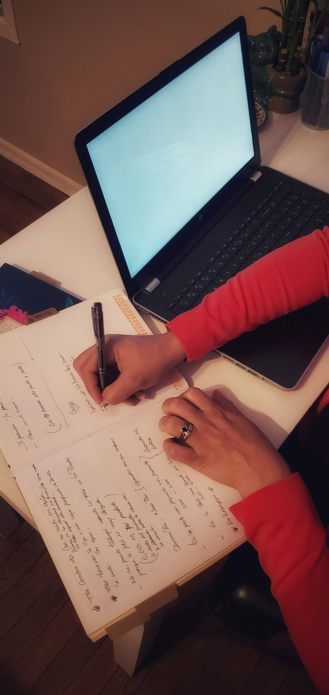
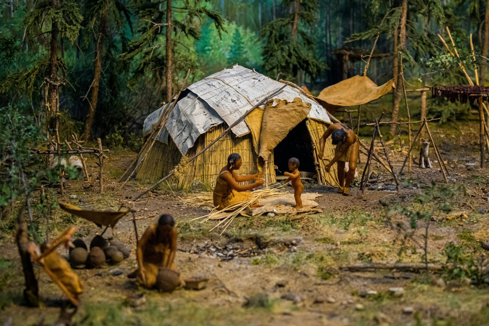

New Media 11
What are we doing?
Pick one. You can swap any time.
Four words
Progress trap, claim, evidence, reasoning. Click through with Ms Mac.
Real or fake?
Four rounds. Two buttons. No score, nothing to fail.
Four words today
Mostly you talking. I'll do the typing.
the big one
what you want people to believe
why they should
the bit that joins them up
What do these three have in common?
Tap each one to see what happened next.
E-bikes
Anyone can get up the climb now.
Phones
Anyone can reach you, anywhere.

AI homework tools
Essays in about four seconds.
So what's the pattern? What do all three do?
Say it however it comes out. There's a word for it on the next screen.
Progress trap
Something that makes life better at first, then causes a bigger problem later, because nobody thought it through.
The trap isn't that e-bikes are bad. It's that nobody asked what happens after.
Your turn: give me one that isn't on this page.
Is it a progress trap?
Claim and evidence
Two halves of the same job. A claim is what you want someone to believe. Evidence is why they should.
Claim
Evidence
Quick one before we start: “E-bikes have ruined the trails.” Claim or evidence?
Next screen I'll read some out and you call it.
Claim or evidence?
A claim is what you want someone to believe. Evidence is why they should.
Reasoning
The sentence that joins your evidence to your claim. It says why this proves that.
Without the last box, you've just dropped a fact on the reader and walked away.
Which one is the reasoning?
Where do you actually stand?
The outline argues technology is moving faster than people can control it. Do you buy that?
Somewhere in the middle
Now the real question: why there?
No wrong answer. This is your essay's position, and it's allowed to be different from the one in the outline.
The film: Surviving Progress

It's where the whole idea comes from. Here's the example they use:
Same shape as your e-bike one, about 20,000 years earlier.
Your job while watching: find one progress trap.
One. Not notes. Not a summary. Just one you can tell me about next time.
The four words
Next time: how ads talk you into things. Starting with that Dove commercial.